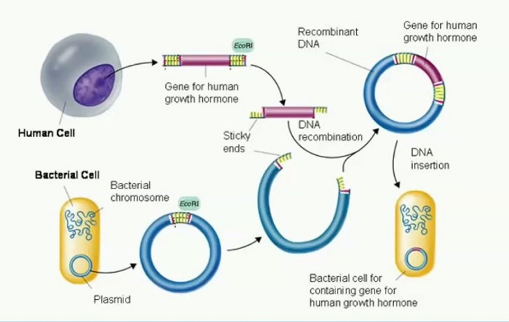

The "Merlin" system for prepping large amounts of recombinant DNA

I always find the innumerable applications for Diatomaceous Earth to be amazing. You keep rocking it little diatoms!
In that vein comes a suggestion from Reddit. /u/Tetrazene suggests using the "Merlin" system for prepping large amounts of recombinant DNA:
"The buffers are similar to a mini/midi/maxi kit, but they have re-usable fritted columns and use diatomaceous earth as the silica substrate."
He says the lab next to him gets 0.5-1 mg of plasmid from a 500 mL culture, and recommends Removing LPS by a normal phenol/chloroform extraction when necessary for certain cell lines.
The linked protocol is by Dr. Bruce Roe, Professor of Chemistry and Biochemistry at the University of Oklahoma. And as the link says, sadly but unsurprisingly, use of diatomaceous earth as a resin in DNA purification kits is evidently a patented procedure of Bio-Rad (Prep-a-gene).